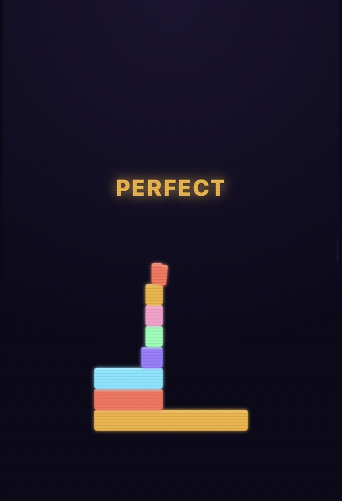
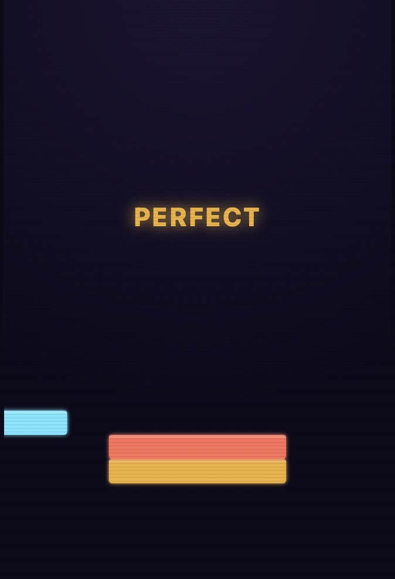
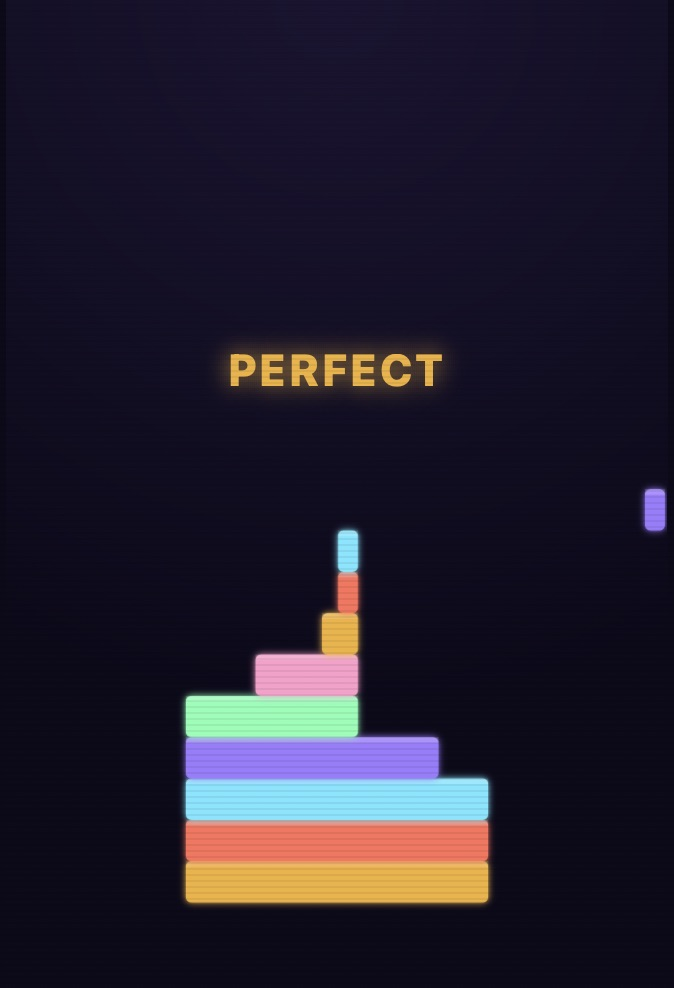

Free · No download · Play in browser
Play Neon Stack online for free — tap or click to drop blocks with perfect timing, stack them as high as you can, and beat your high score before the tower collapses.
How to play Neon Stack
Neon Stack is a one-tap stacking game built entirely around timing and precision. A colored block slides back and forth above your tower — tap, click, or press space to drop it onto the block below. Line it up with perfect placement and the full width carries over to the next layer; misjudge it and whatever hangs over the edge breaks off, shrinking the tower a little more with every imperfect drop. Stack higher and the blocks move faster, so the real skill is staying accurate under pressure. Miss the tower completely and it's game over — the goal is simple: build the tallest tower you can and beat your high score.
Neon Stack screenshots



Controls
| Action | Desktop | Mobile |
|---|---|---|
| Drop the block | Click, or press Space | Tap anywhere on screen |
| Start / Retry | Click the on-screen button | Tap the on-screen button |
Tips & strategies
- Watch the rhythm, not the block. The mover slides at a constant speed per layer — locking onto its rhythm makes perfect timing far more consistent than reacting to its position alone.
- Chase perfect placements early. Every perfect drop keeps your tower at full width, which buys you a much wider margin for error later once the blocks are moving faster.
- Don't panic as speed increases. The game gets faster with height, but your timing window stays proportionally the same — stay calm and keep the same rhythm you'd use at any speed.
- A slightly late tap beats a slightly early one. Since the block only breaks off on the side it overhangs, it's easier to judge a drop when you're used to timing it just past center.
- Accuracy beats speed. There's no bonus for dropping fast — take the extra fraction of a second to line up precision over rushing and missing.
Game features at a glance
- Simple one-tap controls — click, tap, or press space
- Perfect-placement system that rewards precision and accuracy
- Increasing difficulty as the tower grows taller and blocks speed up
- High score saved locally in your browser
- Colorful neon block palette with a glowing arcade look
- Endless gameplay — no levels, just how high you can build
- Runs entirely in-browser, no plugins or installs
About this game
Neon Stack is an original PlayItNow build, made in-house for instant browser play — no plugins, no downloads, nothing to install. If you enjoy classic one-tap stacking games like Stack, Neon Stack runs on that same build-a-tower, perfect-timing formula: simple to learn in seconds, but genuinely hard to master once the tower starts climbing and the blocks pick up speed. It's a fast-paced, satisfying arcade game built to match the neon-arcade look used across the rest of the site.
Neon Stack — FAQ
How do I get a perfect placement?
Drop the block so it lines up almost exactly with the block below it. A perfect placement keeps the tower at full width instead of shrinking, which makes every later drop easier.
What happens when I miss?
Whatever part of the block hangs over the edge breaks off and falls away, and the tower's width shrinks to whatever's left. If you miss the tower entirely, the run ends immediately.
Is my high score saved?
Yes — your best height is saved locally in your browser, so it'll still be there next time you visit on the same device and browser.
Does it work on mobile?
Yes — tap anywhere on the screen to drop each block, the same as clicking on desktop.
Is Neon Stack like other tower stacking games?
Yes — Neon Stack follows the same one-tap, build-the-tallest-tower formula popularized by games like Stack: time your drop, keep the tower balanced, and see how high you can go before it collapses.
Looking for something else? Browse all games on PlayItNow.